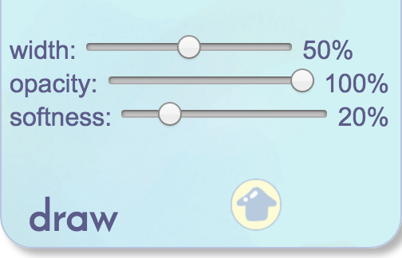

Doodle Date is a multiuser online drawing tool.
However, it can be used alone if you want to Doodle Date yourself! All your work is saved even after you leave as long as you remember your room code.
The usage itself is pretty simple. Just drag your mouse around to draw or erase things. Line color, width, softness and opacity are changable. The tool also includes layers, image references and download. Have fun!
Note: This currently isn't supported on tablets or phones. Hopefully it will be in the future :)
Note #2: Although this tool is fully functional, it is still very much a work in progress! It can be laggy sometimes, and the line opacity is not perfect. I'm also working on the fixing the undo/redo function, which was so dysfunctional I had to take it out. I apologize for any inconvience, but I'm working hard to fix these things!
How it works
Drawing and Erasing

The "Draw" and "Erase" tabs allow you to manipulate line width, opacity and softness. I recommend sticking to an opacity of 100% for drawing. To draw, just drag your cursor across the screen. To switch between drawing and erasing, click on the tab.
Color

The color tab comes with a color wheel, and the current color will be displayed in the big box on the left. There is also a "color memory" to store colors that you'd like to use again later. Click once to grab the color, click twice to set a color.
Layers

"Layers" are used to keep parts of your drawing separate. While on a layer, you can only erase things drawn on that layer. You can add, clear, delete and merge down layers. You can switch between layers and click on the eye to hide/display the content on them.
More: Image Reference, Download, Clear All

Additionally, you can import a file reference to draw with using an image URL. You can also download your drawing, and it'll open a copy if it in a new tab so you can right click to "save as image". If you absolutely hate your drawing and want to reset everything (but not the room code), hit "clear EVERYTHING!".
Inviting Other Users
If you want to draw with friends, start a room by clicking "new room". You can find your room code by clicking on "invite your friends" in the bottom right corner". Then, send your room code to your friends (as many as you want) and have them join through "join room".
And that's it! Enjoy!
Here is some example artwork. I made these doodles to document the progression of the program and test out the functionality, so you can see as different parts are being added.


Constance Ye
* My Site *
I'm a high school senior who lives in California! I love dogs, coding and art, and my dream is to develop software to help artists in the new age.
I made this program as a way to keep in touch with my who live on the east coast. I hope my small program will be able to help you and your friends to connect, however far away you guys live from each other.
Credit and Code
Although the design, code and art within this program are all created by me, I want to thank the Harvard DGMD S-15 Class for all their support during those seven weeks!
Within the program, I used the Farbtastic color wheel made by Steven Wittens.
The code is written in a mix of Javascript and Jquery. All of the source code can be found here.